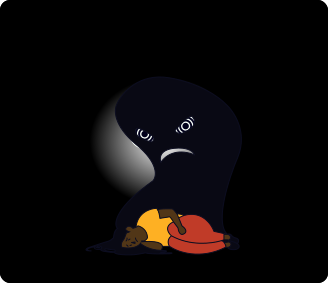
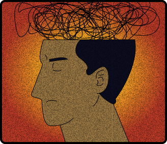

O dia não está ruim, dormi por muito tempo mas continuo cansado, e não quero levantar da cama, na realidade.... Eu não quero fazer é nada hoje, e tenho diversas tarefas para hoje, não é de hoje essa preguiça inacabável.

Outra vez, estou sem determinação para fazer o que preciso, sorrio só para as pessoas a volta não ficarem me perguntando se estou bem, esse pessoal feliz me irrita, tem exatamente nenhum motivo para ficar tão alegre.

Já não aguento mais, seria mais fácil parar de existir, do que me adianta passar meus dias nessa infelicidade inacabável, não vejo esperanças de melhoras, tudo que tinha para dar errado deu, é isso, o ponto final.
Você é maior. Você é capaz. se está aqui, consegue ir para frente.
Os transtornos depressivos fazem parte das patologias com elevada e crescente prevalência na população geral (BAHLS, 2002). A depressão é uma doença psiquiátrica, crônica e recorrente, um problema complexo cujas características principais são, por um lado, um estado de ânimo irritável e, por outro, falta de motivação e diminuição do comportamento instrumental adaptativo.
É marcada também, por alterações do apetite, do sono, da atividade motora, cansaço, especialmente matutino, baixo conceito de si mesmo, baixa autoestima, sentimentos de culpa, dificuldades para pensar ou se concentrar, indecisão, ideias de morte e/ou de suicídio e tentativas de suicídio (MÉNDEZ; OLIVARES; ROS, 2005).
[...] Há evidências de que a atividade física é um recurso importante para reverter quadros de depressão, porém, nem todas as pessoas com predisposição genética reagem do mesmo modo diante de fatores que funcionam como gatilho para as crises: acontecimentos traumáticos na infância, estresse físico e psicológico, algumas doenças sistêmicas (ex: hipotireoidismo), consumo de drogas lícitas e ilícitas, certos tipos de medicamentos (ex: as anfetaminas). (RODRIGUES, 2000).
A doença pode ser acompanhada por alterações de substâncias no Sistema Nervoso Central, principalmente a noradrenalina e a serotonina e, em muitos casos evolui de forma crônica, necessitando de tratamento prolongado. Quadros leves costumam responder bem ao tratamento psicoterápico. Nos outros mais graves e com reflexo negativo sobre a vida afetiva, familiar e profissional e em sociedade, a indicação é o uso de antidepressivos com o objetivo de tirar a pessoa da crise (GRUBITS; GUIMARÃES, 2007).